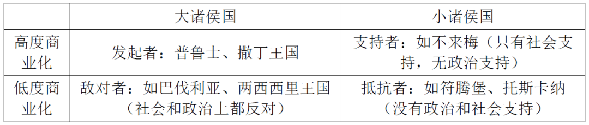
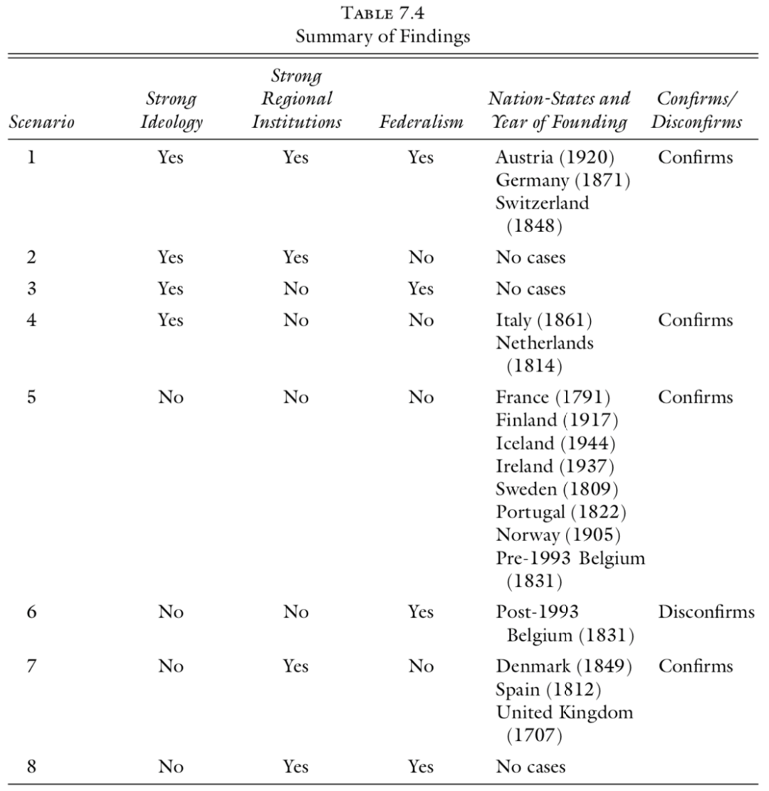

收录于合集
#历史政治学 58 个
#国家建构与国家发展 70 个
#比较政治学 121 个
Daniel Ziblatt是哈佛大学政府系教授，他主要关注欧洲的政体变迁、国家建设问题，其论文大多发表在APSR，JEH，WP，CPS等顶级刊物，近年来出版的著作也屡屡斩获包括“巴灵顿·摩尔奖”在内的各类大奖。Ziblatt傲人的发表记录所能追溯到的起点就是他的博士学位论文。对于一个学者的职业生涯来说，博士论文的关键意义毋庸多言。本文所介绍的《形塑国家：联邦主义之谜以及德国和意大利的形成》（Structuring the State: the Formation of Germany and Italy and Puzzle of Ferdeartion）正是脱胎于Ziblatt的博士学位论文，这本著作帮助他斩获了APSA比较政治分会和欧洲政治与社会分会两个分会的最佳学位论文奖，并在出版成书后拿到了APSA欧洲政治与社会分会的最佳著作奖。
Daniel Ziblatt及其著作Structuring the State书影
一、引言
世界200多个主权国家的结构形式基本可以归为联邦制与单一制两个类型。一直以来，关注现代国家形成的学者更多地将研究重心放在现代官僚体系的构建和各类政体的组织上，相比之下，对现代国家形成过程中国家结构形式选择的讨论并不是那么丰富。在何种条件下，国家要联合起来组成更大的政治单位？当组合为更大的政治单位时，为何有些国家形成了单一制，而有些又形成了联邦制？Ziblatt的这本“形塑国家”对这一系列问题作出了系统的回答。Ziblatt认为，在国家形成的关键节点，次国家政治单位的基础性能力（Infrastructure Power）是解释国家结构形式选择的核心因素。这一理论跳出了基于文化、意识形态、军事能力等需求侧角度对国家结构形式构建的解释，而关注了国家结构形式构建的供给侧——次国家单位是否有能力维持联邦体系的运转。
二、研究问题与既有解释
联邦制和单一制是现代国家结构形式的两个主要类型。在联邦制国家中，地方政府有参与全国性事务的正式渠道、在公共财政上拥有自由裁量权（discretion）且具有行政自主权。单一制国家则与此完全相反，地方没有参与全国政府的正式渠道、没有公共财政的自由裁量权及行政自主权。联邦制的运行特点实际上形成了一种悖论，它要求推动国家构建的政治核心要足够强大才能将其它政治单位吸纳进更大的民族国家框架中，但这一核心又不能过于强大以至于消泯各个部分的自主性。单一制则要求推动民族国家建设的政治核心既能吸纳其他政治单位，又能消灭地方性的权威。那么在何种情况下，会出现这样一个政治核心推动更大范围的民族国家构建，而这样的民族国家构建又会在何种条件下指向联邦制或单一制呢？
针对这一问题，围绕理念、文化和权力这三个核心变量形成了三种解释路径。第一种路径强调理念的作用，这一理论认为社会大众、宪法设计者和政治领导人的理念在塑造民族国家的政治制度结构上起着决定性的作用。第二种理论视角强调历史和文化的作用，这一理论关注社会中的族群界别和文化特性。他们认为联邦制国家更容易出现在人口呈区域割裂状态，且有着根深蒂固的地区性忠诚的政治体中。第三种解释强调国家各部分之间的权力结构。这一理论认为，联邦制的兴起和维系依赖着国家各部分间的权力结构，中心区域既没有强大到能够彻底压制其他地区，其他地区也不足以能够削弱国家的统合。
为了回应既有理论并提出新理论，本书基于19世纪德国和意大利实现民族统一建成民族国家的经历，形成了一个接近于自然实验的设计。在19世纪下半叶，德国的普鲁士和意大利的撒丁王国（皮埃蒙特），在类似的意识形态、文化和权力结构条件下形成了两种国家结构形式。德国最终建成了联邦制国家，而意大利选择了单一制。在意识形态上，考虑到德国和意大利区域间的分立历史，俾斯麦、加富尔等德意领导人物都倾向于在统一后实行联邦制，他们也都对此进行过公开表态甚至承诺。在文化上，由于德国和意大利各邦国在经济上发展的不均衡，因而其内部一些邦国都有极力反对最终统一的历史文化力量。在权力结构上，两国内部都存在一个政治权威以推动统一并确保其在统一国家的统治性地位。德国和意大利关键初始条件的相似性使得我们从意识形态、文化和权力结构等既有理论出发无法解释德国和意大利迥然不同的政治走向。
基于德国和意大利统一的具体历史，Ziblatt试图填补既有理论的缺憾。
三、统一何以可欲
为什么具有一定独立性政治单位要组合成更大范围的民族国家？在意大利和德国民族国家的情境中，这个问题转变成了为什么德意志民族的统一或意大利民族的统一是值得追求的目标？关于这一问题一直以来存在国家中心和社会中心两种解释。以卡尔·波兰尼（Karl Polanyi）为代表的社会中心的观点认为，商业革命驱动着集权式国家的诞生。这一理论认为，普鲁士西部和意大利北部的商业资产阶级为了寻求一个更大的全国性市场和稳定的政治环境而推动国家统一的运动。其中也有学者强调知识分子、秘密社会等社会行动者的影响。而以奥托·辛茨（Otto Hintze）为代表的国家中心观点则认为，国家是推动政治集权化的决定性力量。他们认为，普鲁士和撒丁所主导的国家统一本质上还是通过扩大政治统治的范围来彰显在欧洲的权力。从这一逻辑出发，还有人提出，追求统一是这两个王国通过扩大财税控制的范围来解决债务问题的举动。
不论是国家中心还是社会中心的理论都主要在民族国家层面分析这一问题，在分析德国和意大利的统一进程时，将分析层次限制在国家层面限制了我们验证理论的能力。而在次国家层面进行分析可以扩大比较的对象，实际上，在德意志和意大利诸侯中，各邦对于统一的支持程度是不同的。其中既有普鲁士和撒丁王国这样的主导者，也有萨克森、伦巴第- 威尼托这样的响应者，还有巴伐利亚和两西西里王国（那不勒斯王国）这样的积极反抗者以及汉诺威、托斯卡纳这样的消极反抗者。Ziblatt认为，邦国在1815年前的经济商业化水平决定了其社会是否支持独立，而其政治军事能力则决定了其在政治上是否有能力发挥积极作用。

在具体评估中，作者用人均GDP来衡量地区的经济商业化水平。在19世纪的德国和意大利，一般经济商业化程度越高的地区其人均GDP也更高。如果该地区人均GDP高于全国平均水平则意味着该国属于高度商业化地区，如果低于平均水平则属于低度商业化地区。而在国家的政治军事能力上，作者则主要用国家的支出规模来衡量。
从德国的情况来看，普鲁士的独立主要经历了1834年德意志关税同盟的建立、1866年北德联邦的建立以及1871年德意志帝国最终建成几个主要阶段。极力推动关税同盟的正是普鲁士西部莱茵兰地区的工商业精英。莱茵兰曾在法兰西第三帝国时期被拿破仑直接统治，法国政府在此推行了彻底的商业化改革，这要先于德国其他地区。莱茵兰地区的制造业产品也主要销往德国其他地区。关税同盟的建立正是这些工商业精英的利益所在，普鲁士的工商业精英对关税同盟的建立也发挥了积极作用。在19世纪中后期，共同市场已经不足以满足不断发展的工商业经济。他们呼吁一个单一的德意志货币区、一套单一的德意志法律并取消德意志诸国之间的一切通行费用。在图宾根、汉诺威等较小但商业化发展迅速的诸侯中，也都出现了对普鲁士领导下诸侯间建立更紧密联系的支持。但是在巴伐利亚、符腾堡等南德诸侯中这种支持并没有出现。南德在经济上仍然以农业经济和小手工经济为主流。工业品的自由流动并不符合这部分群体的利益。在1866年的军事失败之前，巴伐利亚政治中的头面人物几乎都是敌视普鲁士的。在1866年之后，尽管巴伐利亚内部也出现了一些支持统一的声音，但也主要集中在工商业经济较为发达的区域。同样工商业经济较发达，不来梅和汉堡不可能像普鲁士那样主导国家统一的进程，因为他们的政治军事能力不足以支持这样的行动。巴伐利亚不仅在经济上反对共同市场，他还是德意志的第二大诸侯国、拥有第二大军事力量。在全德国，只有普鲁士既有能力也有动机推动国家统一，也只有巴伐利亚既有动力又有动机去对抗统一进程。
意大利在许多方面都与德国相似。1789年后，法国在意大利中北部实行过直接统治。拿破仑的统治使得意大利北部开展了一套成功的商业化改革。改革过后，该区域的土地可以被私人购买或出售，土地所有者以市场为导向开展农业活动。商业化的土地贵族和有着良好教育背景制造业精英不仅在经济利益上期待一个统一的意大利，在意识形态上也追求国家的统一。可以说，意大利北部的商业改革使得在该地区的社会中形成了支持国家统一的民族主义联盟。拿破仑在意大利南部仅仅实行了较为间接的统治，只进行了不彻底的土地和劳动力商业化改革，最终也没能形成农业精英和制造业精英的民族主义联盟。商业化改革的落后阻碍了当地的生产力发展，也限制了这些诸侯的外贸发展。在1857年，即意大利统一前三年，皮埃蒙特（撒丁王国）、伦巴第和托斯卡纳三个北部地区每公顷农业产出要高于全国平均水平，教皇国和两西西里王国在这项指标上则远低于平均水平。意利南部诸侯较低的生产力和以及不像北方那样依赖贸易的经济结构，使得他们对国家整合并无兴趣。和意大利其他诸侯多受奥地利、法国等外国势力直接或间接控制不同，撒丁王国在推动意大利统一进程中始终维持着独立地位。此外，撒丁王国的行政体系较为集中，和撒丁王国人口规模相近的伦巴第虽然也属于意大利北部大国，但其内部行政体系集中程度较差且政治领导层受奥地利影响较深。从社会支持程度和诸侯政治能力来看，撒丁王国是意大利唯一一个既有动机（商业化社会）又有能力推动国家统一的意大利诸侯，而两西西里王国是意大利境内唯一一个既有动机又有动力反抗撒丁王国所领导的统一工程的势力。两西西里王国的人口规模、官僚体系规模和军队规模在意大利诸侯中居首且远远领先第二名。除两西西里王国外的其他意大利南方诸侯都与撒丁王国的实力相差甚远。
为什么具有一定独立性政治单位要组合成更大范围的民族国家？在19世纪德国和意大利的具体情境中，Ziblatt提出了社会商业化程度和诸侯政治、军事能力两个解释变量。社会商业化程度较高的诸侯更容易从整合的全国市场中占据优势，商业化社会中的政治精英也更加拥护当时的民族主义思潮。而政治军事能力则直接影响着诸侯是否会为了促成或抵制统一而挺身而出。从这两个解释变量出发，Ziblatt既回答了为何普鲁士、撒丁王国要推动德国和意大利的统一，也能够解释其他诸侯的立场和行动。
四、 联邦制何以可能
从前文可以看出，在走向国家统一的道路上，德国和意大利的初始条件是相似的。他们都有一个占据政治和军事优势的核心力量推动统一，都有一个具备强大军事力量和传统经济模式并反对统一的抵抗核心，和一些支持或反对统一的较小诸侯。尽管他们的领导层在总体上都更认同联邦制更适合本国国情，但最终德国建成了联邦制而意大利走向了单一制。针对民族国家建构中的国家结构形式选择问题，尤其是联邦制何以可能的问题，Ziblatt在既有的意识形态、文化和权力理论外提出了第四种解释因素——被政治核心所吞并区域的基础性能力(Infrastructure power)。作者认为，被吞并区域的基础性权力越强则联邦制越有可能，反之则单一制更有可能。
在意大利，推动国家统一的撒丁王国具有较强的基础性能力，而其他诸侯的基础性能力较差且与撒丁王国的差距较大。两西西里王国虽然管辖意大利36%的领土和37%的人口，但这个邦国几乎没有维持现代治理结构运转的能力。其他五个邦国也是这样（托斯卡纳、教皇国、摩德纳、帕尔马、伦巴第- 威尼托），他们没有宪法、没有议会而且行政机构存在能力不足。1848年后，所有邦国都开始了行政现代化的进程。但其行政的集中化和专业化程度仍然很不足。直到1860年，七个意大利邦国中存在九个税收管理区。两西西里王国和教皇国内部都存在两个规则不同且相互独立的纳税区。在行政专业化方面，尽管1848年后所有意大利邦国已经建立起了专业化的行政机构，但他们在专业化程度上有很大差别。1859年，撒丁有21个专门的税收部门，并有7000名雇员，而摩德纳只有10个税收部门以及1000名雇员。以比较的视角来看，意大利的统一经验并没有验证联邦主义研究中的主流理论：行动者的意识形态或文化偏好几乎没有重要的因果作用。尽管加富尔更偏好通过协商实现和平统一，但两西西里王国的情势还是迫使他在1860年还是出兵南方。意大利的统一实际上是伴随着北方对南方的征服而实现的。在这里，瑞克（Riker）关于军事能力确保了无条件征服的解释并不能站住脚。首先，撒丁最重要的政治家并不支持征服策略。其次，与西西里王国相比，撒丁王国的军事力量与其相对较大的人口和领土规模并不相匹配。要去理解为何联邦主义的政治秩序在意大利没有形成，与其关注理念、文化或军事能力（正如主流理论所提倡的那样）而是要关注各邦国的基础性能力。意大利诸侯，尤其是两西西里王国较弱的基础性能力根本无法保证联邦制的有效运转。统一后，意大利各地的官员也主要来自原撒丁王国，萨伏伊王朝的君主最终在整个亚平宁半岛上建立了单一制的意大利王国。
在德国，除普鲁士外的其他诸侯在制度上更加发达、有着更高水平的基础性能力。在1821年，41个德意志同盟国中有39个已经有了宪法。德意志诸侯国的汲取能力大体上相当。德意志诸国整体的成年男子服役率是意大利的两倍，其中巴伐利亚尤其高。如果从道路密度来看各国的管理的话，除了普鲁士外，其他各国的道路密度水平基本相当，而普鲁士仅为平均水平的一半。普鲁士本可以统治集中化的德意志民族国家，普鲁士与其他诸侯的军事力量对比较为悬殊。但德国的统一并不是通过内部的战争完成的。普鲁士与其他诸侯反而是主要通过协商的方式建立了联邦体制（德国统一过程中的几场关键战役都是对外战争）。这更说明了联邦的建立不在于主导政治力量的实力而在于其国内各政治单位的相对制度发展。德意志各诸侯较高的政治发展水平使得协商统一以及联邦制的国家结构设计有利于快速实现国家统一并保障统一后的有效治理。因此，德国的联邦架构不是基于德国社会的文化、意识形态或权力结构特征，也不是由于俾斯麦的天才。正是由于德国国家能力建构在次民族国家层面已经先行完成了，因而最终导致了民族国家层面联邦主义的制度架构。
在德国和意大利，尽管关键的国家构建精英都是目标驱动型的行动者，但他们有着多重、多变且时而互相冲突的目标。他们不仅仅关心在国际舞台上最大化军事权力、实现民族统一以及确保王权，而且还关注着国内治理，尤其是在新的统一的国家中确保社会稳定。因此，普鲁士和撒丁王国领导层的国家构建策略，不仅受军事和安全因素的影响还受制于国内治理结构。具体而言，在民族统一时，如果前民族国家的各次国家单位具备有效的政治制度，那么政治精英可能将这些制度视为在不引起社会动荡情况下追求快速民族统一的工具。从德国和意大利的案例中可以看出，当次国家政治制度较为有效时（即国家基础性能力较高），联邦主义被视为一种最小化抵抗的民族统一策略。与既有理论的看法不同，联邦主义不再是一种退而求其次的妥协策略。
为了在更大范围里检验自己的研究发现，作者归纳了欧洲几个主要国家在建成民族国家过程中的条件和制度结果。结果见下表，可以发现，是否具有强大的地方制度，即地方政治单位的基础性能力，与国家是否能建成联邦制度高度一致（除1993年的比利时外）。

五、结语
通过对19世纪德国和意大利统一过程的比较历史分析，Ziblatt的核心观点是，构造联邦的政治体制不仅要有形成联邦制的需求，更要有形成联邦制的能力，即有效地方政治制度的供给，地方的基础性能力不仅在体制形成阶段是重要的考量因素，在体制形成之后更是维持有效治理的基础。地方是否能供给足够的基础性能力是联邦体制能否建成的关键。从这一研究结论出发，Ziblatt与Gerring等学者在更为抽象的层次上讨论了在何种条件下统治核心A会在B地建立直接统治又在何种条件下会建立间接统治（John Gerring等 | 是什么导致了直接统治或间接统治？）。利用英帝国与其各殖民地的数据，他们的研究发现：先前的政治发展程度与国家治理结构的分权化水平呈显著的正相关。这一主要基于定量方法的研究结论实际上与本书的结论高度相近。在广大的发展中地区，尽管国家在结构上可以分为“单一制”或“联邦制”，但在一致的制度形式下可能存在着多样化的治理实践。即便在我国也出现了“行为联邦制”的讨论和“特别行政区”、“民族自治区”等明显区别于纯粹单一制的制度设计。在当代发展中国家的政治实践中，Ziblatt这一从19世纪西欧提炼出来的理论并不过时，相反有更广阔、更深远的发展空间。
撰文：赵德昊 审校：杨端程 编辑：康张城
【政文观止Poliview】系头条号签约作者